Sep 2026
SAMOVA team seminar, IRIT, Toulouse
Presentation of my postdoctoral work on bias in multimodal human-agent interaction and on LLM-based analysis of interaction data.
My research asks how technology can help people communicate better, and how that improvement can be measured rigorously. It spans the design of immersive training environments, the multimodal measurement of communicative behaviour, and the fairness of interactions between humans and artificial agents.
Machine learning and the analysis of multimodal data such as speech, voice, language, and nonverbal behaviour, used to model how people communicate and how artificial agents are perceived.
Statistical modelling and the design of user-centred, explainable metrics that turn empirical observation into actionable insight for education and research.
Virtual reality, embodied conversational agents, presence and perception, and the socio-affective dynamics of immersive and hybrid environments.
A two-year postdoctoral project funded by the PEPR eNSEMBLE programme (€168,960), carried out at INRIA Paris under Prof. Chloé Clavel and Prof. Magalie Ochs. TRUST studies how bias, in particular gender bias, arises in multimodal human-agent collaboration, and develops approaches to observe, simulate, and mitigate it, so that hybrid human-agent teams interact more fairly.
The project builds multimodal annotation pipelines that turn recorded interactions into enriched transcripts (speech, prosody, facial expression, gaze, head movement), and uses them to compare real interactions with interactions simulated by large language models. A first methodology, applied to gender bias, was published at ICMI'26; a behaviour-graph extension for measuring bias amplification in LLM-augmented interaction data is under review. Ongoing work extends the pipeline to emotion recognition across several audiovisual corpora, including EVE.
Presentation of my postdoctoral work on bias in multimodal human-agent interaction and on LLM-based analysis of interaction data.
Étude des biais de genre dans la collaboration multimodale humain-agent : entre observation et simulation.
My Ph.D. at HEC Liège (University of Liège, 2019-2025) developed a multidisciplinary framework for public speaking training in virtual reality. The thesis combined the theoretical modelling of persuasive competencies, the design and validation of immersive training environments with virtual audiences, integration into university curricula, and the multimodal evaluation of communicative performance, drawing on speech, voice, and nonverbal behaviour.
A central output of this work is EVE, an acted audiovisual corpus of validated emotional expressions, created to support emotion analysis and the design of expressive conversational agents. The dissertation, Virtual reality and analytics to enhance communication skills: A multidisciplinary approach, was defended in 2025.
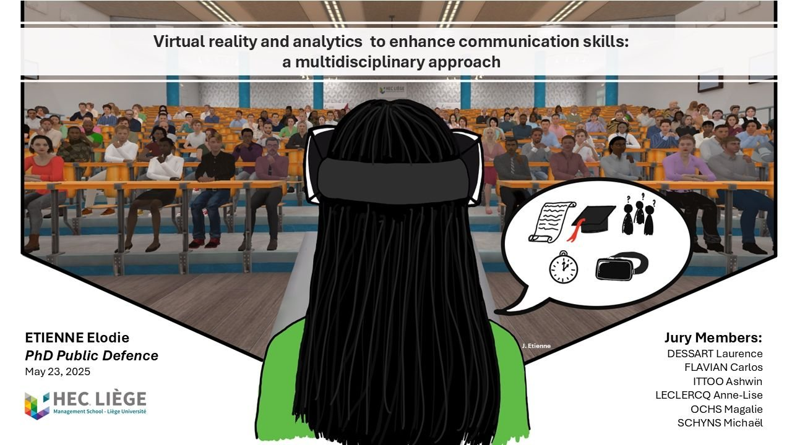
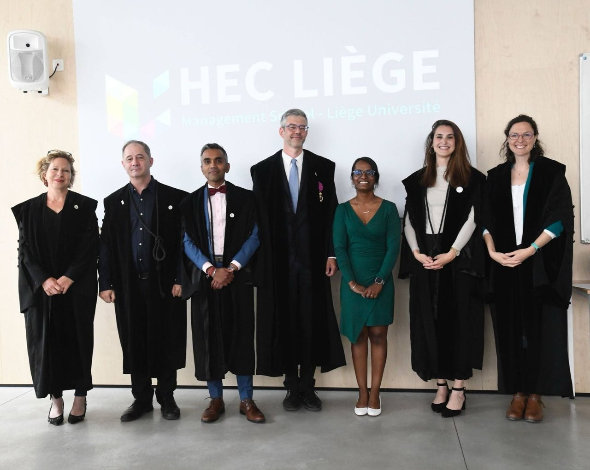

One-month research stay collaborating with Prof. Jean-Michel Loubes and his team on the statistical measurement of bias in multimodal interaction data, funded by a PEPR eNSEMBLE mobility grant.
Seven-month research stay collaborating with Prof. Magalie Ochs and her team on natural language processing and computational linguistics.
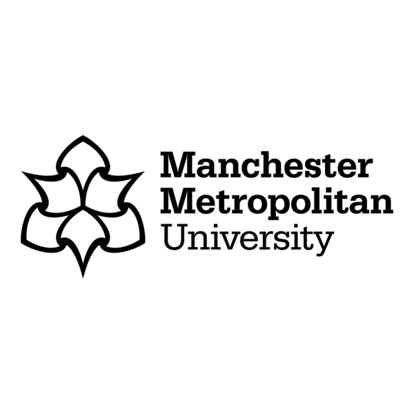
One-month research stay collaborating with Prof. Timothy Jung and his team.
Authored the proposal for a one-month research stay at the Institut de Mathématiques de Toulouse (Paul Sabatier University) under the supervision of Prof. Jean-Michel Loubes.
Authored a two-year postdoctoral project, Transparent and Responsible Unbiased Social Teams, under the supervision of Prof. Chloé Clavel and Prof. Magalie Ochs.
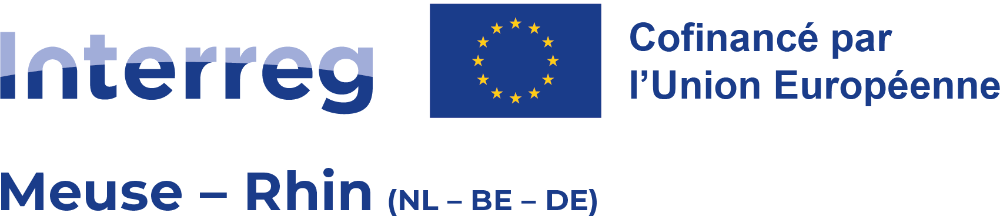
Contribution to the preparation of 4VIR Health, on virtual reality training for nurses in communication skills.
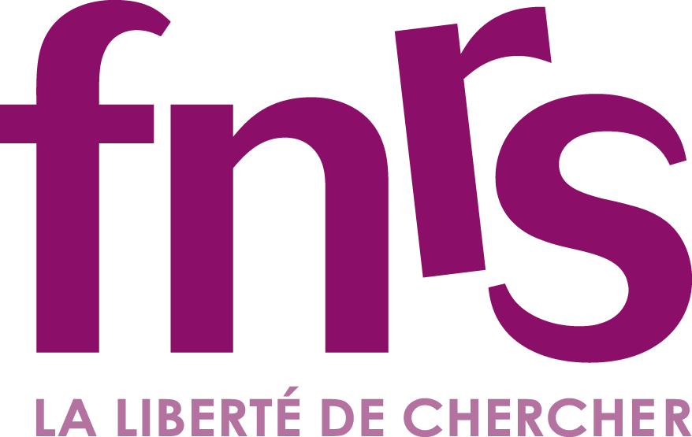
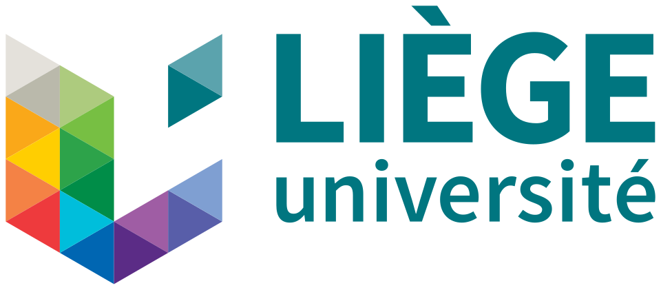
Authored the project proposal for a six-month research stay at Aix-Marseille University.
Authored the EVE project proposal, coordinated with Prof. Michaël Schyns.
Contribution to project preparation and scientific input to the proposal.
Contribution to the ADAM project proposal, led by Prof. Michaël Schyns.
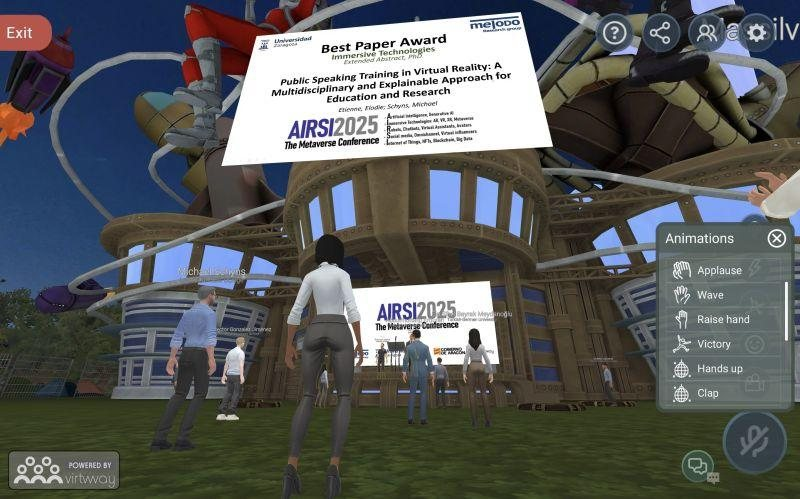
For the most innovative and impactful scientific contribution in immersive technologies.
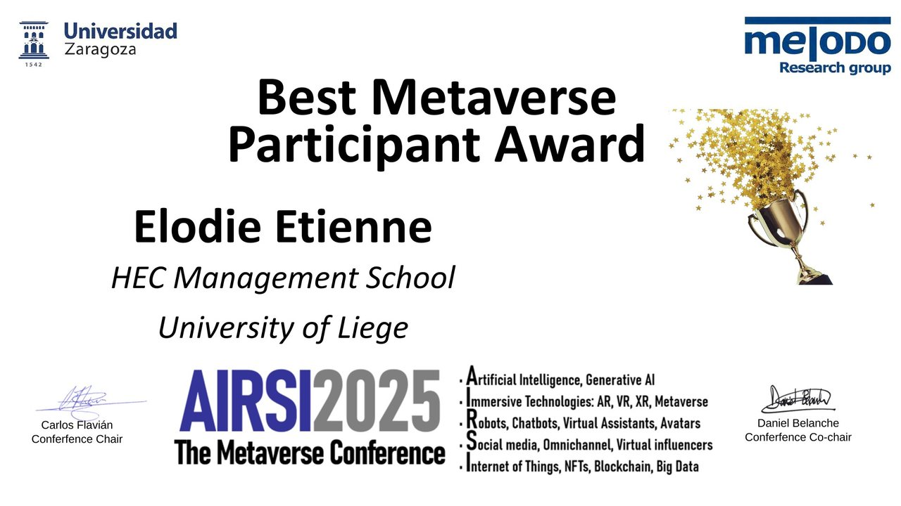
For the most outstanding engagement during the AIRSI 2025 conference.
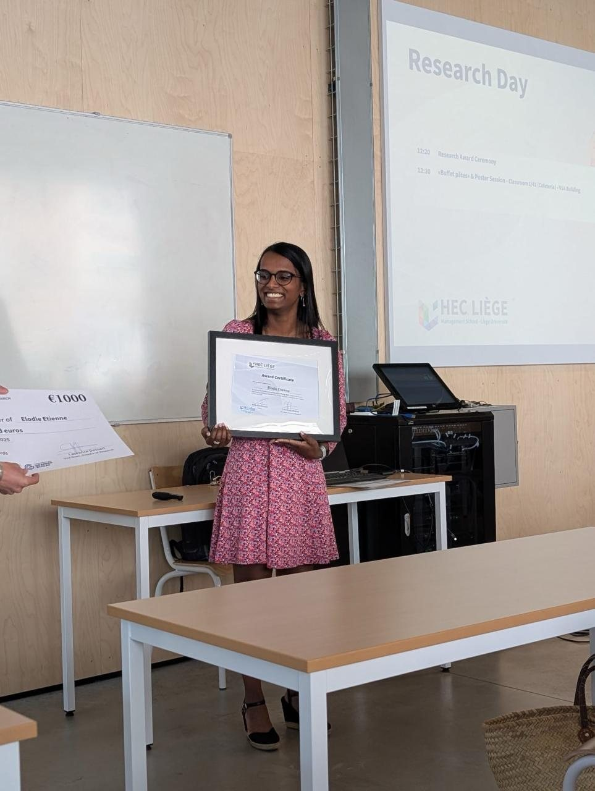
For exceptional early-career research achievements and demonstrated academic potential.
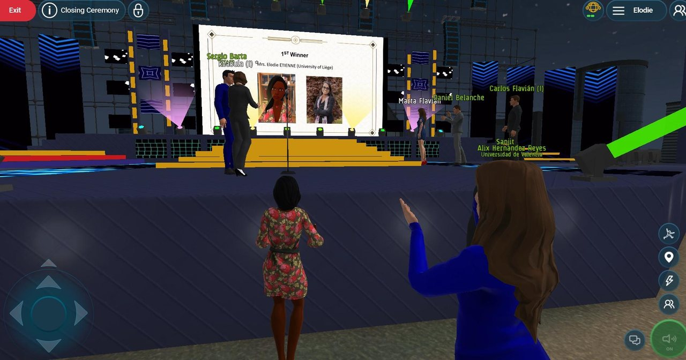
For the most outstanding engagement during the AIRSI 2022 conference.
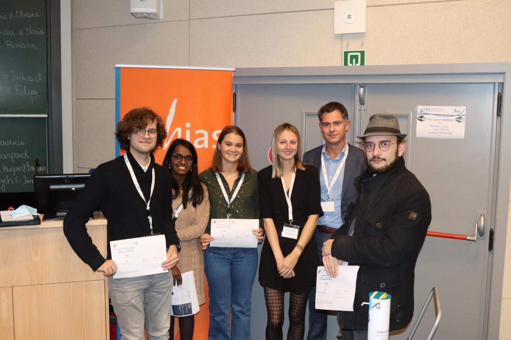
For the most effective solution built during a six-hour hackathon at the RSSB Annual Meeting.
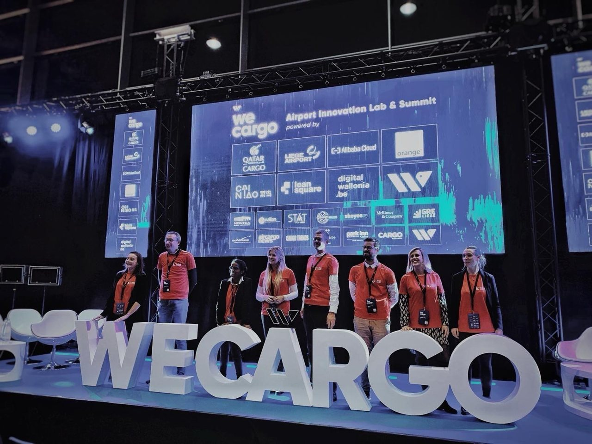
For the most feasible and innovative solution in the WeCargo logistics hackathon.
For outstanding academic excellence.
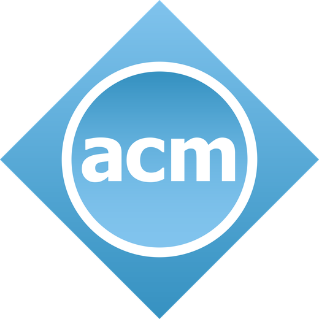
Association for Computing Machinery (ACM)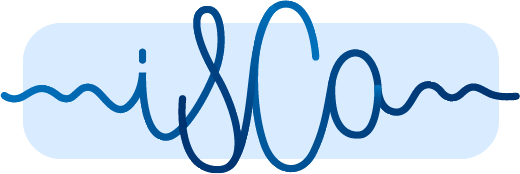
International Speech Communication Association (ISCA)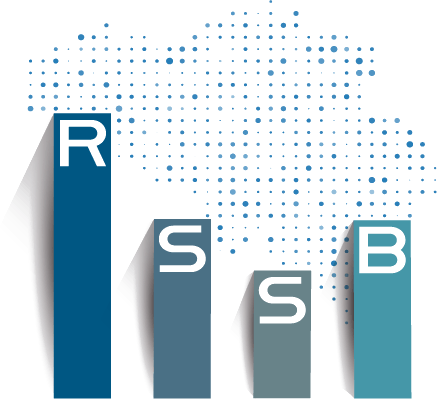
Royal Statistical Society of Belgium (RSSB)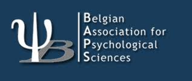
Belgian Association for Psychological Sciences (BAPS)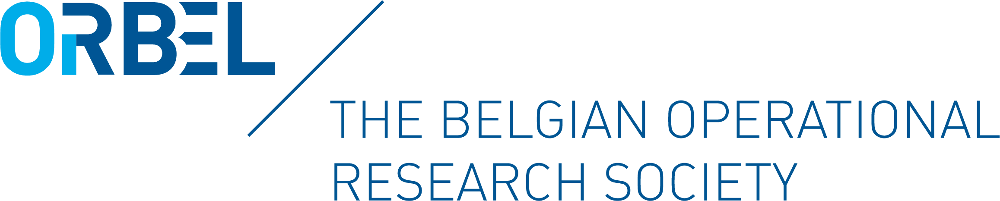
Belgian Operational Research Society (ORBEL)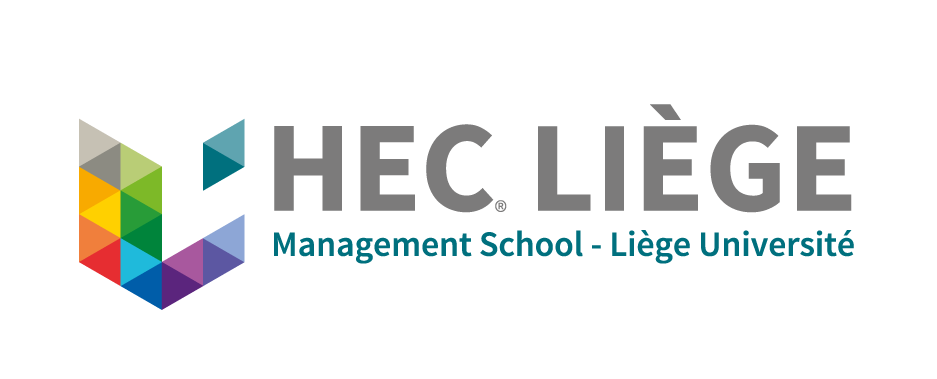
Represented the scientific staff on the faculty research board.
Represented doctoral researchers within the university-wide PhD network.
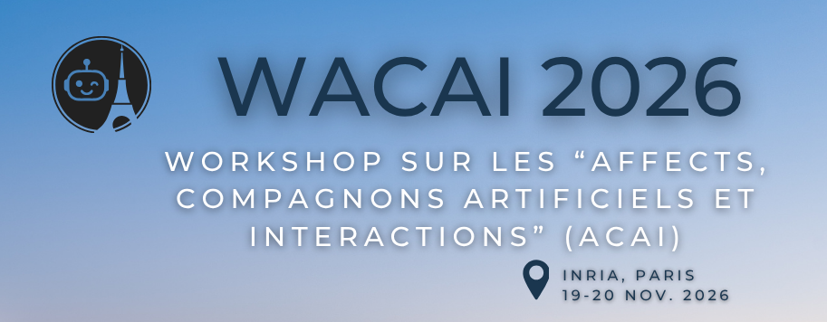
Member of the organizing committee of the French-speaking workshop on affects, artificial companions, and interaction.
Member of the organizing committee of the annual conference of the Belgian Operational Research Society.
Member of the organizing committee of the annual congress of the Royal Statistical Society of Belgium, held in Liège.